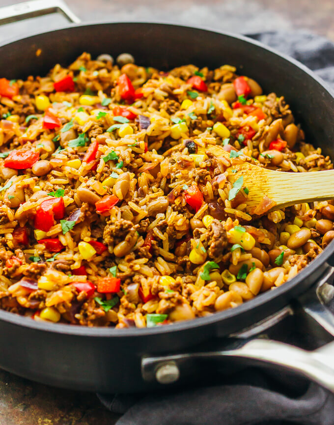

<!--
  Generated template for the GetrecipepagePage page.

  See http://ionicframework.com/docs/components/#navigation for more info on
  Ionic pages and navigation.
-->
<ion-header>
    <ion-navbar color="logo">
        <button ion-button menuToggle>
          <ion-icon name="menu"></ion-icon>
        </button>
        <ion-title>Your Recipe</ion-title>
      </ion-navbar>
  </ion-header>
  
  
  <ion-content padding style="background-color:#000000;">
      <h5 id="rECIPESOFTHEDAY-heading3" style="color:#FDFDFD;font-style:italic;text-align:center;">
          Here's your recipe. Enjoy :)
        </h5>
       
        <ion-card>
      
          <ion-item>
            <!-- <ion-avatar item-start>
              
            </ion-avatar> -->
            <h2>Chicken Biriyani</h2>
            
          </ion-item>
        
          
        
          <ion-card-content>
           
          </ion-card-content>
        
          <ion-row>
            <ion-col>
              <button ion-button icon-start clear small color="logo" >
                <ion-icon name="eye"></ion-icon>
                
              </button>
            </ion-col>
            <ion-col>
              <button ion-button icon-start clear small color="logo" >
                <ion-icon name="list-box"></ion-icon>
               
              </button>
            </ion-col>
            <ion-col>
              <button ion-button icon-start clear small color="logo" >
                <ion-icon name="heart"></ion-icon>
               
              </button>
            </ion-col>
            <!-- <ion-col align-self-center text-center>
              <button ion-button icon-start clear small>
                <ion-icon name="view"></ion-icon>
                
              </button>
            </ion-col> -->
          </ion-row>
        
        </ion-card>
        
        
  </ion-content>